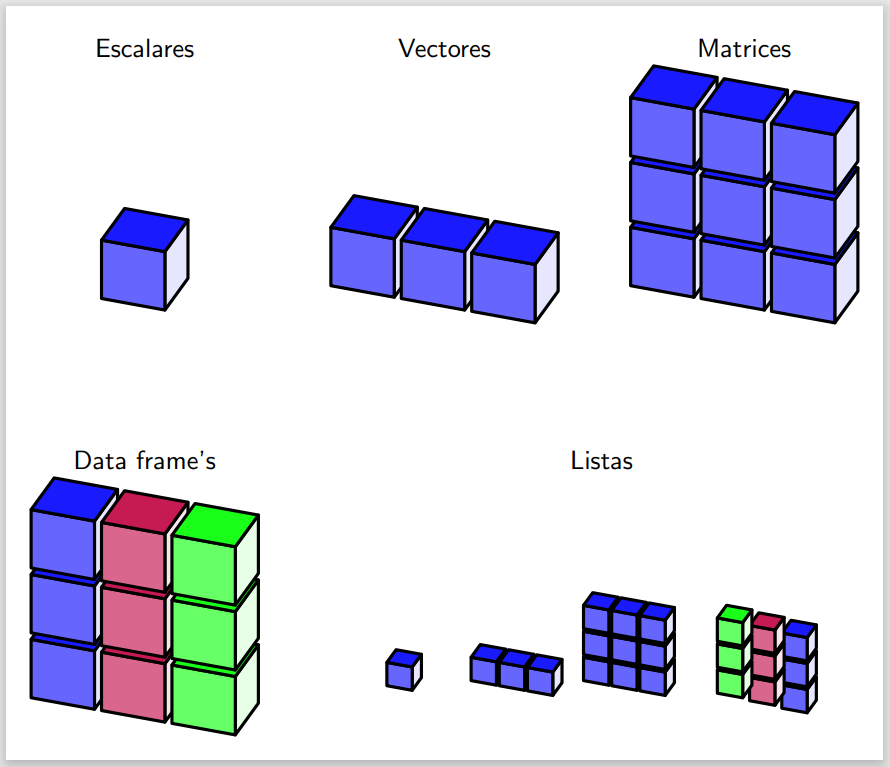
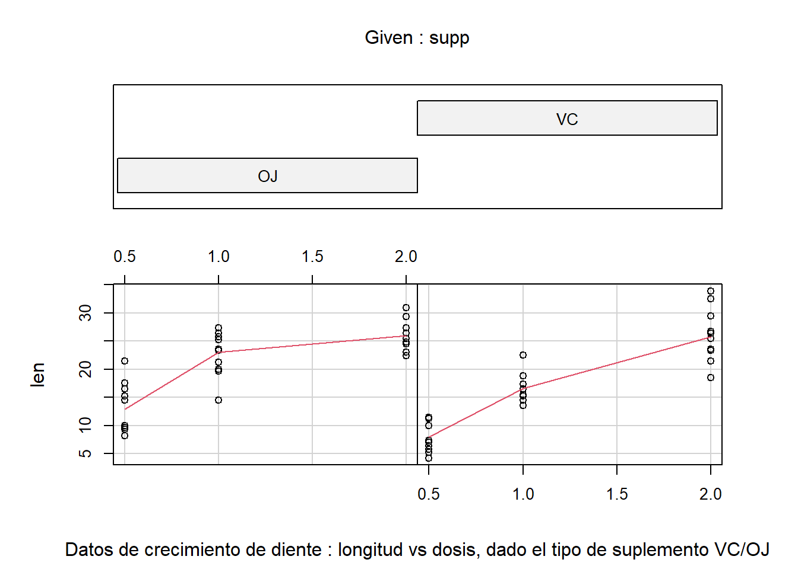

resultado <- sqrt(3) + 5Back to Basics R
Primer acercamiento a R
Este es un tutorial básico de R. Si ya sabes algo de R no creo que encuentres mucho acá. Las expresiones, sentencias y procedimientos mostrados se ejecutaron en el IDE de RStudio
Nota: En programación, una sentencia y una expresión son conceptos diferentes:
- Expresión: Es una combinación de valores, variables y operadores que da como resultado un valor único. Las expresiones en la mayoría de los lenguajes de programación pueden ser simples (como
3 + 5) o más complejas (como2 * (3 + 5)). En R, un ejemplo de expresión podría ser:
En esta expresión, sqrt(3) + 5 es la parte que produce el valor, y luego ese valor puede ser asignado a la variable, e.g., resultado.
- Sentencia: Es una unidad de código que realiza una acción específica. Una sentencia en un lenguaje de programación generalmente realiza una tarea, como asignar un valor a una variable, llamar a una función, o realizar una operación de control de flujo (como una instrucción
ifo un buclefor). En R, una sentencia simple podría ser:
resultado <- sqrt(3) + 5Esta línea de código es tanto una expresión como una sentencia. Es una sentencia porque realiza la acción de asignar el resultado de sqrt(3) + 5 a la variable resultado, y es una expresión porque la expresión sqrt(3) + 5 produce un valor que se asigna a resultado.
Observe que, todas las expresiones son sentencias, pero no todas las sentencias son expresiones. Las expresiones producen valores, mientras que las sentencias realizan acciones en el programa.
Lo clásico
- Historia patria: Inicios y una anecdota…
-
Sobre la instalación: Para seguir este tutorial debe tener instalado tanto
R(programa que hace el trabajo sucio, cálculos y demas), comoRStudio( un entorno de trabajo que permite interactuar con el leguaje de manera mas eficiente e intuitiva). Para esto sugiero los siguientes tutoriales que resultan facil de seguir. -
Sobre la instalación: Explorando RStudio, conociendo los paneles de trabajo:
Consola, Editor, Panel de entornos, yPanel de vista. Estos dos últimos iran tomando sentido y la importancia que merecen a medida que se avance en el conocimiento de lo que esR.
Nota: En un inicio lo mas importante es saber los usos de laConsola, scripts (Editor) y la fución de ayuda (en la pestaña de Help) en elPanel Vista
-
La magia de
R: Programación de objetos -
Instalando paquetes: Para usar un paquete en
Rdebemos hacer dos cosas, instalar el paquete (solo se hace una vez, por el momento)install.packages()y cargarlolibrary(), esto ultimo cada vez que se use en una sesión
Acontinuación se muestra como hacerlo digitando código:
# El nombre del paquete a instalar, siempre entre comillas
install.packages('nombre_paquete')
# Suponiendo que se ha instalado, lo cargamos y no deberia generar error
library(nombre_paquete)Consejo profesional (No lo soy, pero igual): Por más pequeño que sea en lo que estes trabajando, siempre siempre crea un proyecto y luego crea internamente tus documentos para trabajar sobre estos.
R Como Cálculadora (algo original :V)
Como en todo lenguaje de programación, es usual empezar a interactuar con este en forma de calculadora, y lo haremos con R. A continuación se listan las operaciones más basicas (su símbolo, descripción y ejemplo junto con su salida), las cuales bastaran para nuestro fin.
| Símbolo | Descripción | Ejemplo | Salida |
|---|---|---|---|
+
|
Operador binario para sumar |
5 + 17
|
22
|
-
|
Operador binario para restar |
10 - 3
|
7
|
*
|
Operador binario para multiplicar |
4 * 6
|
24
|
/
|
Operador binario para dividir |
20 / 5
|
4
|
^
|
Operador binario para potencia |
2^3
|
8
|
%/%
|
Operador binario para obtener el cociente en una división (número entero) |
10%/%3
|
3
|
%%
|
Operador binario para obtener el residuo en una división |
10 %% 3
|
1
|
Ahora vamos a R, acá se supone que las expresiones estan siendo ingresadas en consola, poe el momento. Importante para evaluar una expresión se ingrasa en la consola y damos enter (). Así las cosas para la primera expresión a continuación tenemos: ‘5 + 17’ + (enter)
> # Suma
> 5 + 17
[1] 22
> # Resta
> 10 - 3
[1] 7
> # Multiplicación
> 4 * 6
[1] 24
> # División usual
> 20 / 5
[1] 4
> # Potenciación
> 2^3
[1] 8
> # Cociente de la división
> 10 %/% 3
[1] 3
> # Residuo de la división
> 10 %% 3
[1] 1
Nota: R usa un punto (\(\cdot\)), como separador decimal. Es importante tener esto en cuenta para evitar confusiones y errores innecesarios. Veamoslo:
> 2,25 + 2.45
Error: inesperado ',' en "2,"Precedencia de operaciones y usos de parentesis
Tabla y notas sobre presedencia de operaciones…
Funciones matemáticas ususales
Revisaremos como se llaman y se operan algunas funciones matemáticas presentes en R por defecto.
Argumentos de funciones
Argumentos de funciones, seno, logaritmosss
Notación cientifica en R y funciones de redondeo: round(), trunc(), floor(), ceiling().
Sobre notación cientifica
Que es notación cientifica…Dependiendo el contexto de
Tabla de funciones… Sobre el nonbre se variables Remover variables de memoria
Funciones y variables en R: Definición y usos.
R: Definición y usos. Variables
Las variables como su nombre lo dice son simplemente variables, en R estas corresponderan a nombres de objetos (números, vectores, matrices, funciones, listas, tablas, arrays…) que guardan algún valor, estas iran variando de acuerdo a las asignaciones que se le hagan sobre la marcha. Esto será muy util a la hora de hacer algún script para solucionar una tarea o problema.
En otras palabras, una variable es el nombre que le damos un objeto que guarda un valor de un dato y con el cual haremos referencia a este para operar dentro del entorno
Veamos las diferentes formas de definir variables en R:
var <- valor
valor -> var
var = valor
Nota: el operador de asignación por defecto que utilizaremos sera <- , i.e., Var <- valor
Definición de funciones:
nombre_funcion <- function(var1,var2,...,varn){definición y estructura}Sobre los nombres de funciones y variables:
Los nombres tanto de variables como de funciones deben empezar por una letra o un punto (no se admiten letras o caracteres), ademas los símbolos/carácteres permitidos para comformar estos serán:
- Letras: mayúsculas, minúsculas, acentos (se recomienda no utilizar).
-
Digitos:
0,1,2,. . .,9 -
Caracteres:
.y_
Removiendo/eliminado objetos en memoria: funciones y variables:
Para borrar un objeto particilar presente en memoria, usamos el comando rm()
Ejemplo de función: La raíz n-ésima de un número real
raiz_n_esima <- function(x,y){if(x >0){x^(1/y)}
else if(x==0){print("Es uno")}
else{print("Su numero es menor a cero")}}Para una definición de la raíz \(n-\text{ésima}\) de un número real positivo \(\mathbb{R}^{+}\), como una función del conjunto de los números reales positivo \(\mathbb{R}^{+}\), en los complejos \(\mathbb{C}^{}\), es decir \(f:\mathbb{R}^{+} \rightarrow \mathbb{C}\)
Así, para un número real \(x \in \mathbb{R}^{+}\) y un exponente entero positivo \(n \in \mathbb{N}^{+}\):
\[ f(x) = \begin{cases} \text{El único número complejo } z \text{ tal que } z^n = x & \text{si } x \geq 0 \\ \text{No está definido} & \text{si } x < 0 \\ \end{cases} \]
- Si \(x\) es negativo: En el conjunto de los números complejos, la raíz n-ésima de \(x\) puede ser definida como un conjunto de \(n\) números complejos distintos \(z_k\) para \(k = 0, 1, 2, ..., n-1\), donde \(z_{k} = r_{k} \cdot e^{i\theta_{k}}\), con \(r_{k} = \sqrt[n]{|x|}\) y \(\theta_{k} = \frac{\arg(x) + 2\pi k}{n}\), para \(k = 0, 1, 2,\ldots, n-1\), siendo \(\arg(x)\) el argumento principal de \(x\).
\[ f(x) = \begin{cases} \{ z_0, z_1, z_2, ..., z_{n-1} \} & \text{si } x < 0 \\ \end{cases} \]
Esta definición se aplica a los números reales negativos.
La función raíz \(n-ésima\) de un número real a los números complejos se define de la siguiente manera:
Sea \(f: \mathbb{R} \rightarrow \mathbb{C}\) una función que asigna a cada número real su raíz n-ésima en el conjunto de los números complejos:
\[ f(x) = \begin{cases} \sqrt[n]{x} & \text{si } x \geq 0 \\ \sqrt[n]{|x|} \cdot e^{i\pi} & \text{si } x < 0 \\ \end{cases} \]
Donde \(e^{i\pi}\) es la unidad imaginaria \(i\) multiplicada por \(\pi\), que representa un ángulo de \(\pi\) radianes en la forma polar. Esta expresión se obtiene al considerar que la raíz n-ésima de un número negativo en los números complejos se puede escribir como el módulo de ese número multiplicado por \(e^{i\pi}\), lo que representa una rotación de \(\pi\) radianes en el plano complejo.
Esta función mapea los números reales no negativos en los números complejos de manera directa, mientras que para los números reales negativos, devuelve un número complejo cuyo módulo es la raíz n-ésima del valor absoluto de \(x\) y cuyo argumento (ángulo) es \(\pi\).
Estructura de datos
Las estructuras de datos son objetos que contienen datos almacenados y organizados de una manera particular. Una estructuras tienen diferentes características, como su dimensión y si son homogeneas o hereterogeneas respecto al tipo de datos que contienen almacenados.
La siguiente imagen contiene las estructuras de datos más comunes en R, junto con su representacion intuitiva de su configuración interna.

Parrrafo de texro 2
La siguiente tabla muestra las principales estructuras de datos que maneja R.Escalares:
chat
Vectores:
chat
Matrices:
chat
Parrrafo de texro 3
Trabajano con un dataframe
Utilizaremos el conjunto de datos ToothGrowth, este dataframe viene almacenado por defecto en R. Siempre que se este trabajando con datos es importante conocer el contexto en el que los datos fueron registrados y sus fines, o al menos que tipo de datos tenemos.
Descripción: El dataframe contine la respuesta es la longitud de los odontoblastos (células responsables del crecimiento de los dientes) en 60 cobayas/cuyes. Cada animal recibió uno de los tres niveles de dosis de vitamina C (0,5, 1 y 2 mg/día) mediante uno de dos métodos de administración: jugo de naranja o ácido ascórbico (una forma de vitamina C codificada como VC). El tamaño del conjunto de datos es de 60 observaciones sobre 3 variables.
[,1] len numérico Longitud del diente [,2] supp factor Tipo de suplemento (VC o DO). [,3] dose numérico Dosis en miligramos/día
Para conocer el contenido y estructura de una variable almacenada en R, existen algunas funcion definidas por defencto. Las mas usuales son: str(), class(), head().
head(ToothGrowth) len supp dose
1 4.2 VC 0.5
2 11.5 VC 0.5
3 7.3 VC 0.5
4 5.8 VC 0.5
5 6.4 VC 0.5
6 10.0 VC 0.5require(graphics)
coplot(len ~ dose | supp, data = ToothGrowth, panel = panel.smooth,
xlab = "Datos de crecimiento de diente : longitud vs dosis, dado el tipo de suplemento VC/OJ")
Un modelo clásico de estadística: regresión lineal
-buscar ejemplo con chat…
Cargando datos: diferentes fuente y formatos
chat
Claro, vamos a profundizar en la función walk del paquete purrr en R.
Introducción a purrr::walk
El paquete purrr es parte del conjunto de paquetes tidyverse y se utiliza para realizar operaciones funcionales de manera eficiente y elegante. Proporciona funciones para trabajar con listas y vectores de una manera más intuitiva que las funciones base de R.
Función walk
La función walk en purrr es una función de orden superior utilizada para aplicar una función a cada elemento de una lista o vector de manera que se ejecuten efectos secundarios. Es similar a lapply o sapply en el sentido de que aplica una función a cada elemento de una lista, pero se diferencia en que walk no devuelve nada (o más precisamente, devuelve la lista de entrada invisiblemente). Es útil cuando necesitas aplicar una función que realiza una acción, como imprimir o escribir en un archivo, y no necesitas los resultados.
Sintaxis
La sintaxis básica de walk es:
walk(.x, .f, ...)Donde:
.xes la lista o vector sobre el cual se va a iterar..fes la función que se aplicará a cada elemento de.x....son argumentos adicionales que se pasan a.f.
Ejemplo con walk
Veamos un ejemplo simple para entender cómo funciona walk:
library(purrr)
# Lista de objetos sobre los cuales se va a iterar (nombres, en nuestro ejemplo)
nombres <- c("Lizeth", "Daniel", "Carlos")
# Función básica para imprimir un saludo
saludar <- function(nombres) {
cat("Hola",nombres,"!\n")
}
# Usando 'walk' para aplicar la función 'saludar' a cada nombre en la lista
walk(nombres,saludar)Así, walk aplica la función saludar a cada elemento de la lista nombres y ejecuta el efecto secundario de imprimir un saludo para cada nombre.
Ejemplo de uso de walk (verificación de paquetes)
Frecuentemente olvidamos si tenemos o no algunos paquetes instalados, y seriá de utilidad tener una manera rapidad de comprobar y hacer la instalación. Luego utilizaremos walk para iterar sobre una lista de paquetes y verificar si cada uno está instalado, o no lo está. Esta nos permitirá iterar sobre la lista de paquetes de interes y aplicar una función que verifica e instala los paquetes listados sin preocuparnos por los valores de retorno, enfocándonos solo en los efectos secundarios (la instalación de paquetes). Para el ejemplo listaremos paquetes de uso común en análisis de datos, modelado predictivo y procesamiento de texto.
packages <- c(
"broom", "forcats", "hcandersenr", "janitor", "LDAvis", "lubridate",
"magrittr", "naivebayes", "polite", "ranger", "rtweet", "rvest", "sotu",
"spacyr", "stm", "stmBrowser", "stmCorrViz", "textdata", "textrecipes",
"tidymodels", "tidytext", "topicmodels", "tune", "wordcloud", "workflows",
"yardstick"
)
purrr::walk(
packages,
~{if (!.x %in% installed.packages()[, 1]) install.packages(.x)}
)A tener en cuenta en lo anterior:
- Lista de paquetes: Se define una lista
packagescon los nombres de los paquetes que deseamos tener disponibles. - Función anónima en
walk:purrr::walk(packages, ~{ ... }):walkitera sobre cada elemento enpackages.~{ ... }: La tilde (~) se usa para definir una función anónima (lambda) enpurrr. Es una forma corta de definir una función en línea..xes el argumento implícito que representa el elemento actual depackagesdurante cada iteración.if (!.x %in% installed.packages()[, 1]) install.packages(.x): Para cada paquete.x, verifica si está instalado (.x %in% installed.packages()[, 1]). Si no lo está, lo instala (install.packages(.x)).